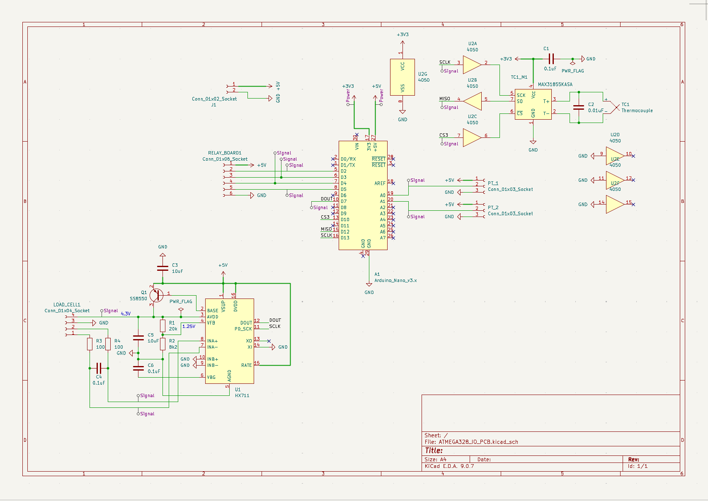
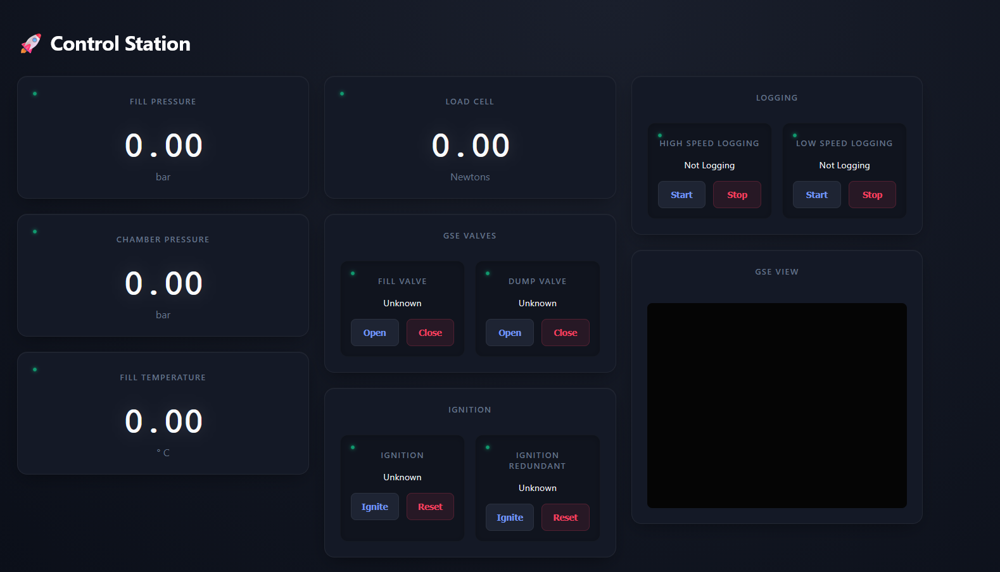
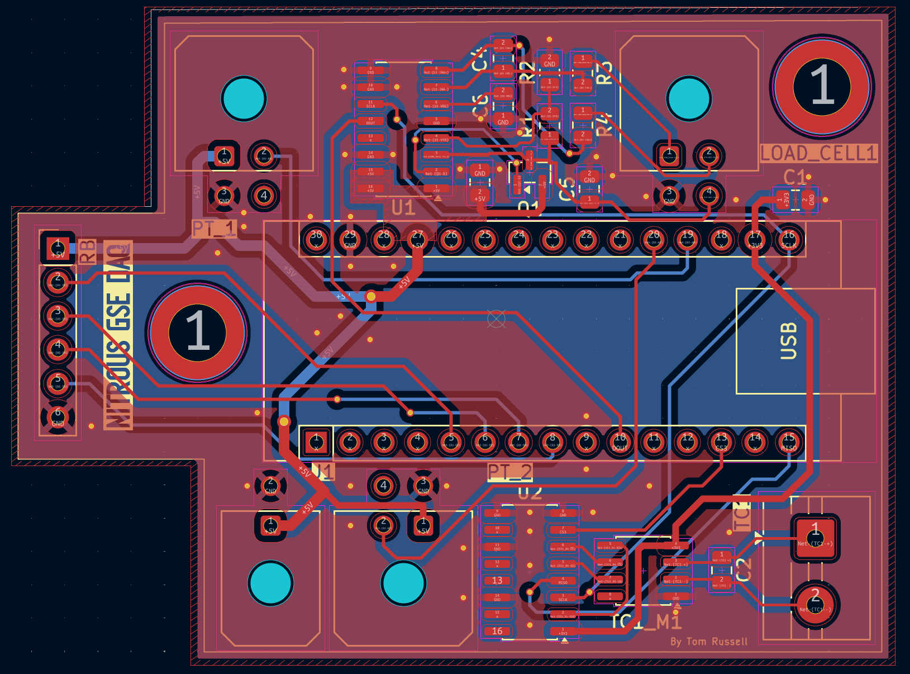

Scope
- Develop a DAQ PCB for standalone control of a nitrous oxide fill box with pressure, temperature and load cell live display and relay actuation.
- Implement networking code for remote telemetry and camera streaming over 100 m.
- Build practical electronics and software skills through a real application.
- Build a low cost GSE, making a highly portable system to service my hobby rocketry needs.
Key Characteristics
DAQ PCB
Custom board with pressure transducer inputs, thermocouple inputs and circuits, relay control, load cell amplifier and MCU for communicating to control station.
Remote operation
Network setup with Ubiquiti, sockets using UDP, websockets with TCP connecting to JS/HTML frontend from 100 m away, very low latency, and complete feedback and heartbeat.
Ground station
UI for monitoring pressure, temperature, thrust, initiating logging, commanding relays and viewing the camera stream from a safe distance.

Schematic
Circuit schematic showing the pressure sensor inputs, thermocouple IC circuit, load cell amplifier circuit and relay control.

Board render
3D render of the assembled DAQ PCB with all components placed.
Ground station software
- Live pressure readback, relay toggle controls and integrated camera stream for remote operation from a safe distance.
- Telemetry and video designed to be livestreamed from over 100 m from the fill box.
- Python backend setup with sockets and websockets using UDP for high refresh rate sensors and TCP to connect video stream, all interfacing with JS/HTML front end.
- PCB communicates via UART with phone at pad side, phone connects to ubiquiti network and data is streamed from there back to control to be received and sorted into end points.

Ground station GUI
GUI showing live readouts of engine and GSE telemetry.
Design Overview
DAQ PCB design
- Microcontroller reads pressure transducers, thermocouples (via IC) and load cell (via amplifier) using various filters to optimise signal. Digital pins used to drive separate relay board.
- Designed to minimise cost and maintain simplicity, has all capabilities of more expensive DAQ with less channels.
- PCB mounts inside a portable enclosure alongside the fluid components, communicating with a pad-side phone over UART which then handles networking.

PCB layout
Routing and component placement for the DAQ board.
Personal takeaways
- Learnt PCB design from schematic to routed board, learning thermocouple and load cell circuit design, routing design, filtering and strong embedded design fundamentals.
- Built a full networking stack and remote operation GUI, gaining practical experience with networking and high speed data streaming.
- Developed a better understanding of GSE requirements for hybrid rocket operations and how electronics integrate with fluid systems.
Current status
- DAQ PCB is made and has been tested. Networking code and ground station GUI are functional with remote telemetry and camera streaming demonstrated over 100 m.
- Fluid system is complete and hydrostatically tested.
- Last step is box manufacturing to put all components in, entire system has been tested without box.